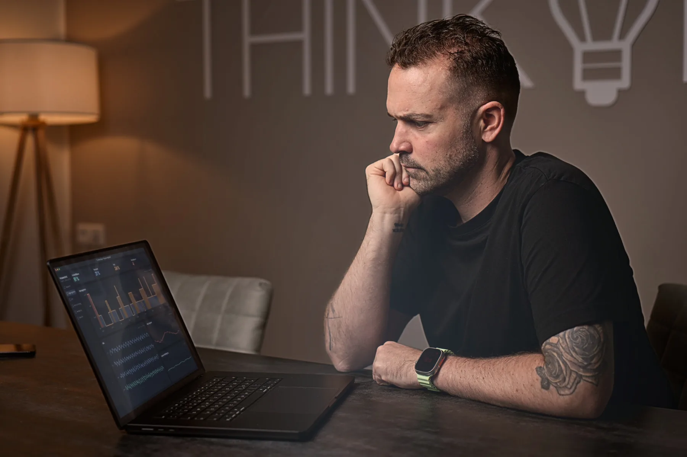

Vom Bettenhaus zur Schlafwissenschaft
Über 20 Jahre mit einem Thema. Erst im Handel, dann in Unternehmen, heute in der Forschung. Jede Station hat etwas hinzugefügt.
Alles beginnt mit dem Bett
Mein Einstieg in die Welt des Schlafs ist ganz praktisch: im familiengeführten Bettenfachgeschäft. Matratzen, Ergonomie und Beratung sind mein Alltag.
Schnell merke ich, dass guter Schlaf weit mehr ist als das richtige Bett. Warum wachen manche Menschen erholt auf und andere trotz acht Stunden erschöpft? Diese Frage lässt mich nicht mehr los.
Vom Fachgeschäft zum Spezialisten
Gemeinsam mit meiner Frau Jessica baue ich das Geschäft zu einem Fachhaus für gesunden Schlaf aus. Es entstehen drei Standorte mit rund 30 Mitarbeitenden.
Nebenbei studiere ich Betriebswirtschaft und International Management. Mich beschäftigt immer mehr, wie Verantwortung, Druck und Belastung im Job unseren Schlaf verändern. So entstehen meine ersten Vorträge und Beratungen für Unternehmen.
Mehr unter www.alesi-schlaf.de →

Aus Beratung wird Schlafgesundheit
Ich gründe Sleep Consulting. Daraus entsteht später das Institut für Schlaf und Regeneration.
Mein Blick wandert weg vom Produkt, hin zu Physiologie und Gesundheit. Es entstehen Konzepte für Unternehmen, Schichtarbeitende und den Leistungssport. Schlaf wird für mich endgültig zum Gesundheitsthema.
Mehr unter www.institut-schlaf.de →
Volle Konzentration auf Schlaf
Wir stellen als Familie die Weichen neu. Jessica führt das Bettenhaus weiter, ich baue mit meinem Team das Institut aus.
Parallel studiere ich Prävention und Gesundheitsmanagement. In meiner Masterarbeit untersuche ich, wie sich Schlafstadien über Herz und Atmung und mithilfe von Algorithmen bestimmen lassen.
Schlafwissen wird digital
Mit meinem Team entwickle ich digitale Angebote für Unternehmen und den Spitzensport, darunter ein interaktives 3D-Schlafportal.
Gemeinsam mit dem Sportmediziner Dr. Lutz Graumann schreibe ich das Buch „Endlich richtig ausgeschlafen“. Das Ziel bleibt dasselbe: Forschung so übersetzen, dass sie im Alltag ankommt.

Aus Erfahrung wird Forschung
An der Deutschen Sporthochschule Köln promoviere ich bei Prof. Dr. Ingo Froböse.
Ich untersuche, wie intensives Gaming am Abend das autonome Nervensystem und die nächtliche Erholung beeinflusst. Seitdem ergänzt eigene Forschung meine Erfahrung aus der Praxis.

Schlafwissenschaft trifft Alltag
Ich bin Mitglied im wissenschaftlichen Nachwuchs der Deutschen Gesellschaft für Schlafforschung und Schlafmedizin (DGSM) und veröffentliche in Fachjournalen.
Ich habe das Buch „Einfach besser schlafen“ (Riva Verlag) geschrieben und bin AGR-Experte für rückengerechtes Schlafen. Unternehmen wie Deutsche Bank, ExxonMobil und STIHL vertrauen auf meine Expertise in der betrieblichen Gesundheitsförderung.